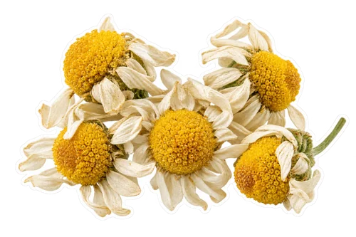

Gather your ingredients
For two cups. The optional additions are yours to choose.

2 teaspoons dried food-grade chamomile flowers- 2 cups freshly boiled water (480 ml)
 2 small lemon wedges, washed
2 small lemon wedges, washed- Optional: 1–2 teaspoons honey or sugar, to taste
How to make it
Measure the dried chamomile into a heat-safe teapot or a roomy infuser. Use chamomile sold for food or tea use, rather than flowers from a florist or an unidentified garden plant.
Pour over 2 cups of freshly boiled water. Cover the pot and steep for 5 minutes. Taste carefully; extend to 7 minutes if you prefer a stronger floral flavor.
Strain through a fine tea strainer into two cups. A roomy infuser or fine mesh catches the small flower fragments better than a coarse kitchen colander.
Serve with a small lemon wedge beside each cup. Squeeze in a few drops, taste, and add more only if you want it. Sweeten lightly if desired.
Let the flowers lead
Chamomile is the main ingredient here; lemon is an optional finish. Keeping the citrus out of the steep lets each person choose their own balance. The cup can range from pale gold to a deeper yellow depending on the flowers and the steep.
Buying loose flowers
Look for a culinary chamomile ingredient with a clear label. Whole and broken dried flowers can both be used; very fine material needs a finer strainer. Keep the flowers in a sealed container away from dampness and use the supplier’s storage guidance.
Make a chilled pot
Steep the flowers in 1 cup of hot water, then strain and add 1 cup of cold drinking water. Chill promptly. Serve over ice with a thin lemon slice, or leave out the citrus for a softer floral cup.
Adjust the next cup
If the tea tastes too strong or bitter to you, dilute it and shorten the next steep. If it is faint, increase the flowers slightly rather than piling in lemon. A little honey adds sweetness, but it changes the flavor too; try the plain tea first.
Before choosing chamomile
NCCIH notes that chamomile can cause allergic reactions, especially in people allergic to related plants such as ragweed, and can interact with medicines. If either applies to you, check with your clinician or pharmacist before using it. This recipe is shared for its flavor, without a sleep or treatment promise.
Make a small brewing kit
Gather a kettle or saucepan, a heat-safe teapot or jug, a cover, a teaspoon measure, and a fine tea strainer. A roomy reusable basket is helpful when the flowers are small or broken. If your teapot has no built-in strainer, brew directly in the pot and strain as you pour. For one mug, use 1 teaspoon of dried flowers and 1 cup of hot water, then cover with a small plate. Keep the mug on a stable surface and take care when removing the hot cover.
Read the flower label before measuring
Choose a product identified as chamomile and intended for culinary or tea use. The recipe starts with 2 teaspoons of dried flowers for two cups, so use a level measure rather than a large heaped spoon. Do not assume all yellow-centered white flowers are interchangeable, and do not use a decorative bouquet as an ingredient source. If a supplier provides preparation instructions for its particular flowers, read them alongside this recipe. The amount here is an approachable starting point for flavor, not a medicinal dose or a claim about a health effect.
Separate three flavor decisions
You can change flower quantity, steeping time, and lemon amount independently. Begin with the written flower measure and a 5-minute steep. If that tastes faint, extend the steep slightly before adding other ingredients. If the tea is already pleasant, try only a few drops of lemon in one cup. Add sweetener last, if wanted. Changing all three things at once makes it harder to know which part you enjoyed. A quick note such as “5 minutes, no lemon” is more useful than trying to remember the exact appearance of the pot.
Brew four cups without stretching the steep
For a four-cup pot, use 4 teaspoons of dried chamomile and 4 cups water, about 960 ml. Keep the initial steep at 5 minutes and taste before extending it. Set out four small lemon wedges rather than putting all the lemon into the pot. This keeps the base infusion consistent while giving each person a choice. A larger batch needs a larger strainer or basket as well as a larger vessel. Do not double the steeping time just because you doubled the water; adjust the flavor after tasting.
A fine strainer makes the serving easier
Chamomile flower pieces can be smaller than mint leaves, so check your strainer before brewing. If the first cup has more fragments than you prefer, pour the remaining tea through a finer clean mesh. Let the liquid drain without firmly squeezing the flower material. You can remove the infuser before bringing the pot to the table so everyone gets the same starting flavor. Keep a small dish nearby for the used infuser and the lemon wedges; it saves balancing a hot basket on the rim of someone’s cup.
Choose a simple variation with a clear purpose
The easiest variation is to leave out the lemon completely. That lets you compare the plain floral infusion with the citrus version without buying another herb. Another option is to chill the strained base and add lemon only to the glass you are drinking. If you are considering a second botanical, first make a separate small pot of it so you know its flavor and preparation requirements. More ingredients do not automatically make a better tea. Keep the base recipe recognizable, and write down any successful changes you want to repeat.
Keeping a little for later
For the best flavor, make a small pot close to serving. If keeping some, strain out the botanicals, cover, and refrigerate promptly. Make only what you expect to use soon. Do not leave a pot sitting out all day or treat homemade tea as shelf-stable.
FoodSafety.gov recommends refrigerating perishable food within two hours, or one hour above 90°F, and keeping the refrigerator at 40°F or below.
Questions before you brew
Does this recipe need tea bags?
No. The recipe measures loose dried flowers. An empty reusable infuser is just a straining tool, not a premade tea blend.
Can I use fresh chamomile instead?
This recipe is written for dried culinary flowers. Fresh flower amounts and identification need their own guidance; do not replace them with an unidentified lookalike.
Made for flavor and everyday enjoyment. Read our recipe and image standards. Chamomile information: NCCIH.